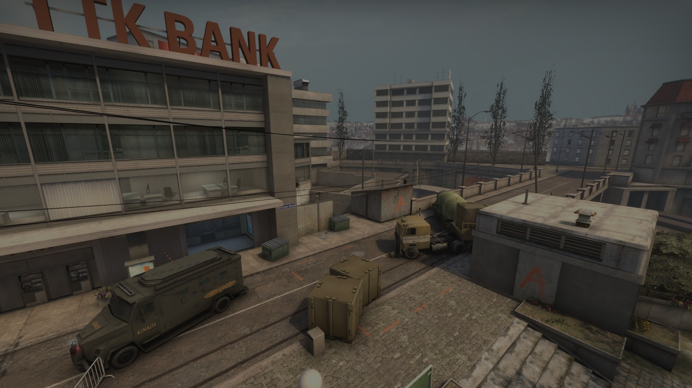

Mapas variados
Em CS:GO há, atualmente, 7 mapas oficiais, para partidas competitivas e torneios
Ver mapasModos variados
CS:GO conta com 4 modos de jogo para se divertir com seus amigos ou até mesmo conhecer pessoas novas
Ver modos
Estratégias variadas
Trabalhe sua estratégia e foco em meio a partidas intensas de CS e melhore suas habilidades motoras enquanto se diverte
Ver vídeos